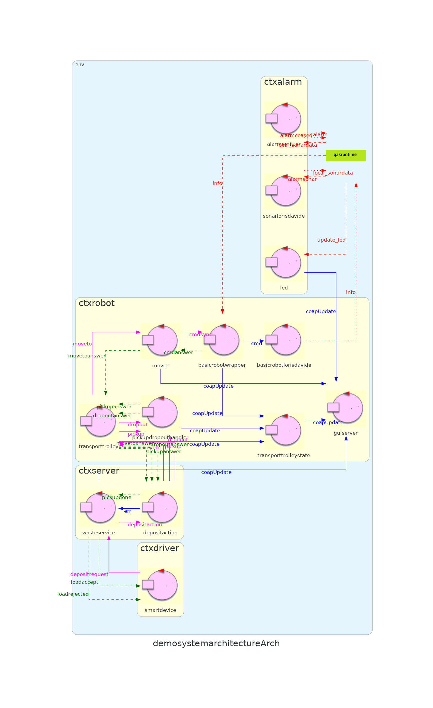

Introduction
Progetto finale di ISS, che consiste in un impianto di smistamento dei rifiuti nel quale un robot deve trasportare il materiale dal camion al relativo container
Requirements
Requirement analysis
- La Position del Transport trolley (non è necessaria la posizione precisa di un sistema di coordinate)
- Il Transporttrolleystate, ossia lo stato attuale del Transport trolley. Formalizzato con l'enumerativo Transporttrolleystate.kt:
enum class Transporttrolleystate { IDLE, MOVING, PICKINGUP, DROPPINGOUT, HALT } - Il peso corrente contPB e contGB del materiale contenuto in PLASTICBOX e in GLASSBOX
- Lo stato corrente del LED
Scrum Goal and Work Plan
Scrum goal:
Obiettivo dello SPRINT3 è l'estensione della demo dello SPRINT2 per realizzare il requisito riguardante la WasteServiceStatusGUI specificato dal committente al punto 3.
Inoltre è necessario pensare ad un piano per la distribuzione, il committente gradirebbe che questo avvenisse con container Docker.
Piano di lavoro:
- Analisi del problema riguardo la tipologia di GUI da implementare
- Analisi del problema riguardo il passaggio di informazioni alla GUI
- Sviluppo / adattametno dei componenti necessari
- Realizzazione di un modello eseguibile (a tal proposito verrà utilizzato il metamodello QAK).
- Realizzazione di un (più completo) test-plan per il modello
Problem analysis
Architettura logica precedente:

GUI
Webgui o gui standard
-
Webgui, con un componente che fa da server web e che risiede su un server aziendale
- + Gui visualizzabile su qualunqe dispositivo dotato di browser
- + Riutilizzo di codice disponibile (progetto Webrobot)
- - Necessaria definire l'interazione tra server web e "sistema" (osservare attori tramite CoAP, oppure connettersi come un "alieno", oppure avviare il server come componente interno ad un attore)
-
Gui standard "tradizionare", ossia con un componente da installare sulla workstation nella quale si desidera visualizzare le informazioni della GUI
- + Non necessita la presenza di un browser (ma oramai la quasi totalità dei dispositivi lo possiede)
- - Necessario installare componenti su ogni dispositivo nel quale viene visualizzata la GUI
A sua volta abbiamo 2 possibilità
-
Si sviluppa un programma "esterno" al sistema, ossia un eseguibile che si connette tramite rete al sistema e avvia una gui sulla workstation
- - Necessario definire l'interazione tra server web e "sistema" (osservare attori tramite CoAP, oppure connettersi come un "alieno")
-
Si sviluppa un programma "interno" al sistema, ossia il nodo sul quale è in esecuzione la GUI diventa una parte integrante del sistema, con un attore (ad es. un externalqactor) che riceve/osserva le informazioni e le mostra sulla gui avviata dall'attore
- - Viene di fatto aggiunto un nodo al sistema, si ha un nuovo contesto solo per la GUI
- - Aumenta l'accoppiamento del sistema con la GUI, che è una "external interface", il sistema non dovrebbe dipendere da qualcosa di esterno (vedi clean-architecture)
Alla luce di questi raginamenti risulterebbe più conveniente sviluppare una webgui (adattando quella di Webrobot)
Interazione sistema / webserver
Si è inizialmente ragionato su due possibilità:
-
Quella di un attore interno al sistema che osserva (tramite CoAP) tutti gli attori necessari, per poi inviare gli opportuni aggiornamenti al webserver per mezzo di eventi. Il webserver apre una connessione TCP verso i vari contesti per connettersi come "alieno".
Tuttavia questa modalità di interazione è stata recentemente deprecata dal supporto, dunque l'opzione non è più percorribile (in virtù della prossima modalità di interazione)
-
Il webserver osserva gli attori come risorse CoAP, ricevendo aggiornamenti in merito al loro stato e mostrando di conseguenza le informazioni di interesse
Il Transporttrolleystate viene calcolato dalla GUI o dal sistema?
Transporttrolleystate può essere calcolato:
-
Dal webserver (quindi esternamente)
- + Il sistema ha un compito in meno
- - Sistema meno flessibile in caso di future componenti
Da un attore del sistema (quindi internamente)
- + Informazione potenzialmente utile per futuri componenti, che risulterà così reperibile anche da essi
Al fine di garantire una futura maggiore estensibilità dell'applicazione si ritiene più opportuno calcolare internamente l'informazione, delegando il compito ad un opportuno attore (transporttrolleystate)
Riassunto situazione attuale:
Architettura logica:
Note
Il webserver esterno (o comunque il componente che si occupa di mostrare la gui) viene al momento rappresentato con l'attore servergui: esso dovrà comunque osservare gli attori transporttrolleystate, wasteservice, mover e led.QAK
Modello del sistema QAKTestplan (non ancora eseguibili):
Project
Web robot
L'implementazione di WebRobot è stata effettuata mediante l'utilizzo di SpringBoot.
WebRobot riceve le informazioni mediante l'utilizzo di CoAP, che a sua volta invierà informazioni al front-end mediante l'utilizzo di una WebSocket.
Più nello specifico, le informazioni che giungono tramite le connessioni CoAP (e che vengono elaborate dagli oggetti
ContainerObserver, PositionObserver, TrasportTrolleyObserver, LedObserver)
aggiornano un oggetto bean (UpdateGui), che viene poi trasformato in una stringa JSON poi inviata tramite WebSocket a tutti i client attualmente connessi.
Pagina web:

Riassunto situazione attuale:
Architettura logica:

problematiche
È stato notato, testando il sistema, di come le informazioni CoAP non sempre riuscissero ad essere correttamente visualizzate.
Per fare fronte a questo problema è stato fatto, in maniera iterativa, una nuova analisi del problema per riuscire a risolvere questa problematica.
Si è constatata la difficoltà del sistema nel mantenere le connessioni CoAP attive, in particolare alcuni messagi erano vuoti e portavano al blocco della comunicazione.
È stato quindi necessario riorganizzare la struttura degli attori del sistema.
Problem analysis
Per far fronte alle problematiche riscontrate in precedenza è stato introdotto un nuovo attore, denominato coapdispatcher.
Quest'ultimo avrà il compito di osservare gli attori transporttrolley,pickupdropouthandler,basicrobotwrapper,mover e, tramite un dispatcher, comunicare con il led ed trasporttrolleystate.
Mediante questa tecnica gli attori ledalarmcontrol e trasporttrolleystate non osserveranno attori CoAP ma bensì riceveranno dei dispatch.
In questo modo risulta soltanto un attore in osservazione e genera meno difficoltà nel sistema nella loro comunicazione.
Riassunto situazione attuale:
Architettura logica:

QAK
Modello del sistema QAKTestplan (non ancora eseguibili):
Project
È stato necessario implementare un ulteriore attore, chiamato coapdispatcher, che ha il compito di osservare gli attori transporttrolley, basicrobotwrapper, pickupdropouthandler e mover.
In questo modo si è potuto avere un solo attore in osservazione, che poi procede ad eseguire un dispatch delle informazioni ottenute a transporttrolleystate e ledalarmcontrol.
Questo porta ad un minore appesantimento del sistema nella comunicazione CoAP risolvendo le problematiche riscontrate in precedenza.
Test funzionamento progetto:
Test plans
Test effettuati:
- test_accepted(): Il robot viene interrotto durante una move forward, durante una turn, durante una Pickup e una Dropout. Si controlla che gli stati delle varie macchine assumano i valori che si si aspetti
Classe di test TestSprint3_integration_transporttrolleystate.kt:
Classe per testare il sistema, in particolare per verificare il funzionamento dell'attore transporttrolleystate